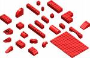

Introduction to Noesis Engine
Developing 3D real time applications is harder each time. The technology advances exponentially as we have faster machines. Noesis Engine was created to tackle that problem and create a network that can hide the technical problems and allows focusing in the final application.
Noesis Engine is a platform oriented toward developing 3D real time content. Although its component based architecture allows for using Noesis Engine in other areas. Noesis Engine is structured in two layers. The first one, the low-level one, is implemented in C++ and it is designed to be extensible. The second one, the high-level layer, is implemented using Python. This part is still under development. You can think as the C++ layer as and 3D Real Time Operating System giving services to the Python layer.
What follows is an enumeration of the main features provided by Noesis Engine.
Component Based Architecture
Noesis Engine follows the philosophy of using small blocks to construct software. Those blocks are assembled very similar to Lego pieces that combine to create new forms.
The smaller building block in Noesis is the package. A package is a set of files under the same directory. It is a physical association (same directory) and a logical association (all the files inside the package are related). All the packages are located in the packages directory inside the SDK. Examples or packages are: Kernel, DX9RenderSystem, Mesh, etc.
Each package is associated to other packages by dependencies. A package depends on other package if it needs it to work. For example, the DX9RenderSystem package depends on the Kernel package to work. This way all the packages under Noesis form a dependency graph.
This dependency system allows for creating the exact package set that is needed to build each application.
NSToolkit is the tool in charge of managing packages: checks dependencies, view installed packages, build packages, etc.
A network of packages
Noesis Engine try to avoid the problem of reinventing the wheel. Its organic structure allows for incorporating external packages that are already solving a specific problem.
So, and if the licensees are compatible, external third parties are incorporated to Noesis Engine creating a thin layer that ensures the proper integration of external work.
Examples of third parties being used in Noesis Engine are Python, Expat, FCollada, etc.
Customizable by the client
The term client is used here as an application using Noesis Engine Technology.
A Noesis Engine client can select the exact packages that will fit its requirements. For example, if I am interested in building a terrain simulator using Noesis Engine I select the root packages I am interested in and the automatic dependency system will gather for me all the packages that I will need. That client will be isolated from the rest of the evolution of Noesis as he is only interested in a subset. The set of packages needed for an application is denominated a distribution.
An extensible platform
Noesis Engine packages are built using components and interfaces. Using interfaces the implementations are isolated from the public API. This way, each package can be replaced by a new implementation if the interface is respected. This allows for clients substituting those packages by new ones that are better for its domain.
This extensibility feature of Noesis Engine is the one that allows using Noesis Engine in a a lot of different domains.
Source Code Oriented
Noesis Engine is distributed with source code and with the proper building scripts for each platform (makefiles, vcproj, etc). Each client can tweak how to compile its distribution to better fit its platform.
Multi-platform
Noesis Engine is designed to be multi-platform. Although at the beginning all the efforts are concentrated in Windows XP and Windows Vista.